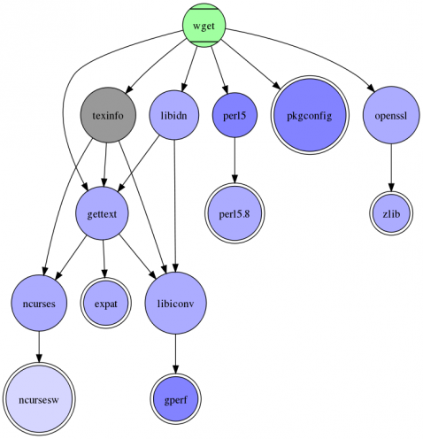
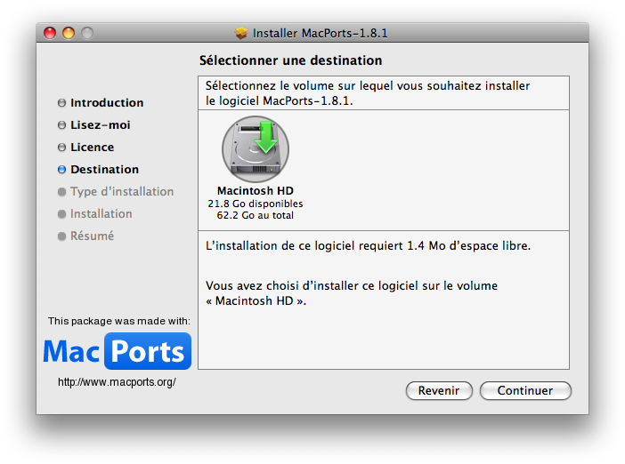
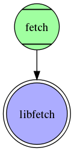

Il existe de nombreuses façons d'installer un logiciel sous Mac OS X. La première consiste à faire comme la plupart des utilisateurs, et de télécharger le logiciel sur Internet, pour l'installer ensuite. Cette façon de procéder fonctionne pour beaucoup de programmes, mais parfois certains programmes spécifiques ne sont pas disponibles sous une forme facilement installable, voire ne sont carrément pas disponibles pour Mac. Il existe cependant des moyens détournés d'installer ces programmes. :)
MacPorts est ce qu'on appelle un gestionnaire de paquets. C'est un logiciel qui se charge d'installer un programme demandé : il va le télécharger, le "préparer", et l'installer sur votre ordinateur, sans que vous ayez à faire autre chose que lui dire "installe-moi ce logiciel." ;)
C'est un fait, beaucoup de logiciels disponibles sur le Web sont très faciles d'installation. La plupart sont disponibles sous forme d'exécutable : c'est un fichier contenant du code binaire directement utilisable par votre ordinateur. Il n'y a donc aucune manipulation particulière à faire, à part installer le logiciel de la manière indiquée. :)
En revanche, certains logiciels (beaucoup en fait, mais peu connus sous Mac), particulièrement les logiciels libres, sont disponibles sous la forme de code source. Ce code source décrit le fonctionnement du programme de façon claire pour un humain, mais l'ordinateur ne sait pas le lire. Il faut pour cela compiler le code source (avec un compilateur), c'est-à-dire le transformer en code binaire, utilisable par votre ordinateur. Cette manipulation, même si elle est simple dans beaucoup de cas, peut s'avérer très complexe sur Mac, tout particulièrement lorsque le logiciel que l'on cherche à compiler ne se présente pas pour Mac à l'origine (mais une fois compilé il fonctionne très bien).
Les dépendances sont un des problèmes épineux que l'on rencontre lors de l'installation de tels logiciels. En effet, pour bien fonctionner, un programme est souvent dépendant de plusieurs autres programmes ou bibliothèques, qu'il faut aussi installer. Et bien souvent ces bibliothèques ont besoin d'autres bibliothèques pour être compilées, etc. :( Voici un schéma en guise d'exemple :

Pour installer wget, il faut d'abord installer tout ça.
C'est là que le gestionnaire de paquets entre en scène. Il dispose d'une liste de paquets. Les paquets sont des programmes disposés sous une forme compréhensible pour le gestionnaire : il y a une liste des dépendances, un mode d'emploi pour la compilation et l'installation, de la documentation, etc. Tout est centralisé. Il suffit de dire au gestionnaire "installe-moi le logiciel X", et il installera les dépendances de ce logiciel, téléchargera et compilera le logiciel, et enfin l'installera, ainsi que sa documentation, au bon endroit sur votre disque dur. ;)
Évidement, un gestionnaire de paquets peut être utilisé pour désinstaller un logiciel précédemment installé, et aussi supprimer les dépendances devenues inutiles. Il peut aussi être utilisé pour mettre à jour un logiciel et ses dépendances. :)
On a dit que MacPorts compilait le code source des programme qu'il voulait installer. Malheureusement, MacPorts n'est pas un compilateur : il faut donc en installer un. ;) Apple fournit sur son DVD d'installation des logiciels "optionnels" lors de l'installation de Mac OS X sur un ordinateur. Il y a notamment les Xcode Tools. C'est une suite de logiciels permettant le développement de programmes sous Mac OS X. Si vous ne les avez pas déjà installés, faites-le : il y a un installeur sur le DVD. Parmi ces Xcode Tools, il y a le compilateur GCC (qui est d'ailleurs nécessaire au développement d'applications sur Mac). C'est lui que MacPorts utilise pour compiler les programmes qu'il installe.
Il y a une deuxième installation préliminaire à faire : installer X11. X11 est le serveur graphique utilisé sur GNU/Linux. Il est nécessaire quand on installe des programmes qui n'ont pas étés développés pour Mac OS X. Pour les versions de Mac OS supérieures à 10.5, X11 est installé par défaut dans le dossier /Applications/Utilitaires. Si vous avez une version antérieure à 10.5, ou que X11 n'est tout simplement pas installé, il est disponible sur le DVD d'installation de Mac OS X. ;)
Vous pouvez à présent télécharger l'installeur de MacPorts ici (choisissez le lien qui correspond à votre version). Lancez l'installeur :

Il ne vous reste plus qu'à créer un dossier « MacPorts » dans votre dossier Applications, et voilà ! MacPorts est installé sur votre ordinateur, prêt à fonctionner ! :D
Il existe plusieurs façons de se servir de MacPorts. La méthode principale consiste à utiliser la ligne de commande. On peut donc s'adresser à MacPorts via des commandes, comme install, upgrade, etc. Il y a une commande pour chaque action possible.
Avant de commencer, il faut savoir que MacPorts s'installe dans le dossier /opt/local. Vous pouvez regarder dans Macintosh HD, il y a bien un nouveau dossier opt. Le problème, c'est que la commande de MacPorts se trouve dans ce dossier, et que celui-ci ne figure pas dans la variable $PATH (elle contient les dossiers où se trouvent les commandes : si MacPorts n'y est pas, on ne peut pas l'utiliser correctement). Il faut donc l'y ajouter.
Ouvrez donc Terminal, tapez la commande echo 'export PATH=${PATH}:/opt/local/bin' >> ~/.profile et appuyez sur <Entrée>. Relancez le Terminal, et tapez la commande port. C'est la commande de MacPorts.
MacPorts 1.8.1
Entering interactive mode... ("help" for help, "quit" to quit)
[Users/rosewood] >
Ici, vous êtes en mode interactif, c'est-à-dire que vous êtes à l'intérieur de MacPorts (plus possible de tout casser :p ). Vous l'aurez compris, MacPorts affiche sa version, un message d'accueil, ainsi qu'un prompt. Le texte entre crochets vous indique dans quel dossier vous vous situez (ici Users/rosewood).
Pour quitter tout ça, entrez la commande quit.
Les ports
Les ports sont les paquets dont on a parlé précédemment. Vous pouvez afficher la totalité des paquets avec la commande list :
J'ai compté, il y a 6435 lignes :p . Vous remarquerez que le prompt est de nouveau là, vous pouvez donc taper une autre commande.
Dans la liste des paquets qui s'est affichée, vous pouvez déjà avoir un peu plus d'informations sur un paquet : vous avez son nom, sa version (@1.3.1), et sa catégorie (aqua/AquaLess).
Le problème avec la commande list, c'est que si elle fait une liste exhaustive des paquets, elle n'est pas très pratique lorsque l'on cherche un paquet en particulier. C'est là qu'intervient la commande search. Cette commande prend un ou plusieurs paramètres : les mots-clés que vous souhaitez chercher. Elle va d'ailleurs chercher ces mots-clés dans le nom du paquet, mais aussi dans sa description. Chaque paquet possède une courte description des ses fonctionnalités, pour que vous puissiez savoir ce que fait le programme que vous allez installer.
[Users/rosewood] > search hack
AppHack @1.1 (aqua, devel)
Program for hacking application bundles.
blib @1.1.7 (graphics, blinkenlights)
Library of useful things to hack the Blinkenlights
denyhosts @2.6 (security, sysutils)
DenyHosts is a utility to help sys admins thwart ssh hackers
jnethack @3.4.3-0.10 (games, japanese)
Classic dungeon adventure game, translated in Japanese.
nethack @3.4.3 (games)
Classic dungeon adventure game.
p5-universal-can @1.15 (perl)
Hack around people calling UNIVERSAL::can() as a function
Found 6 ports.
Vous voyez donc tous les paquets qui correspondent à une recherche avec hack comme mot-clé.
Une fois que vous avez trouvé un paquet intéressant, vous pouvez utiliser la commande info pour obtenir des informations détaillées sur ce paquet : ces dépendances, son site web, ses variantes, le système-cible, etc.
Pour installer un paquet, on utilise la commande install, en précisant le nom du paquet à installer. MacPorts va alors se charger d'installer les dépendances, de compiler les sources, etc. Essayons d'installer le paquet fetch.
[Users/rosewood] > install fetch
---> Computing dependencies for fetch
---> Fetching libfetch
---> Verifying checksum(s) for libfetch
---> Extracting libfetch
---> Applying patches to libfetch
---> Configuring libfetch
---> Building libfetch
---> Staging libfetch into destroot
---> Installing libfetch @6.2.0-RELEASE_0+darwin
---> Activating libfetch @6.2.0-RELEASE_0+darwin
---> Cleaning libfetch
---> Fetching fetch
---> Verifying checksum(s) for fetch
---> Extracting fetch
---> Applying patches to fetch
---> Configuring fetch
---> Building fetch
---> Staging fetch into destroot
---> Installing fetch @6.2.0-RELEASE_0+darwin
---> Activating fetch @6.2.0-RELEASE_0+darwin
---> Cleaning fetch
On peut voir que MacPorts installe d'abord la bibliothèque libfetch, puis installe ensuite le programme fetch, car fetch dépend de libfetch (c'est d'ailleurs la seule dépendance) :

On peut séparer le processus d'installation en plusieurs étapes. On a d'abord le téléchargement (Fetching fetch :p ), l'exécution du script./configure (Configuring fetch), la compilation (Building fetch), l'activation (Activating fetch) et le nettoyage du paquet, tâche qui consiste à supprimer tous les fichiers liés à la compilation qui ne sont plus nécessaires.
Désinstaller un paquet
Pour désinstaller un paquet, on utilise la commande uninstall. Seulement, il arrive que l'on se heurte à quelques problèmes lors de la désinstallation. En effet, que se passe-t-il si on désinstalle un paquet qui était nécessaire au bon fonctionnement d'un autre ? Certaines dépendances ne sont nécessaires qu'à la compilation d'un paquet, mais d'autres sont nécessaires à l'exécution du programme. Essayons de désinstaller libfetch pour voir :
[Users/rosewood] > uninstall libfetch
---> Unable to uninstall libfetch 6.2.0-RELEASE_0+darwin, the following ports depend on it:
---> fetch
Error: port uninstall failed: Please uninstall the ports that depend on libfetch first.
Goodbye
MacPorts nous annonce gentiment que fetch est dépendant de libfetch et qu'on ne peut pas le désinstaller.
Il faudrait d'abord désinstaller fetch puis libfetch alors ? C'est un peu lourd...
Oui, on pourrait faire comme ça. Mais si on voulait désinstaller un paquet comme xorg, il faudrait supprimer les dizaines de paquets qui en sont dépendants. C'est effectivement trop lourd. :-° Heureusement, il existe deux options qui permettent de se simplifier la vie. Les options sont des paramètres passés aux commandes qui permettent d'en modifier le comportement. L'option -f permet de forcer la désinstallation du paquet, quoi qu'il arrive.
[Users/rosewood] > uninstall -f libfetch
---> Unable to uninstall libfetch 6.2.0-RELEASE_0+darwin, the following ports depend on it:
---> fetch
Warning: Uninstall forced. Proceeding despite dependencies.
---> Deactivating libfetch @6.2.0-RELEASE_0+darwin
---> Uninstalling libfetch @6.2.0-RELEASE_0+darwin
Sauf que là, fetch sera toujours installé, mais ne fonctionnera plus. On n'a donc rien changé au problème, puisqu'au final on aura désinstallé les deux paquets un à un.
Il existe une option plus pratique : l'option --follow-dependents. Cette option va suivre les paquets qui sont dépendants du paquet que vous souhaitez désinstaller, et les désinstaller avant de s'occuper du vôtre.
Et voilà ! On a réussi à désinstaller deux paquets en une ligne ! :)
Mettre à jour un paquet
Pour mettre à jour un paquet, c'est-à-dire télécharger les nouvelles sources et compiler le nouveau logiciel, on utilise la commande upgrade. Si le paquet peut être mis à jour, la procédure est lancée. Si ce n'est pas la cas, MacPorts ne fera rien.
Pour vérifier qu'on a la dernière version du paquet disponible, comment s'y prend MacPorts ?
MacPorts possède une liste de tous les paquets disponible. Il compare donc la version du paquet installé avec celle de la liste. Cependant, ce système pose une limite : si la liste des paquets n'est pas à jour, MacPorts ne fera jamais les mises à jour de vos paquets. Il faut donc lui dire de temps en temps de mettre à jour la liste, avec la commande sync.
Il existe une autre commande qui permet de faire la mise à jour des paquets, mais qui installe la dernière version de MacPorts en même temps. C'est la commande selfupdate.
Voilà, vous savez à présent faire un usage basique de MacPorts.
Il existe plusieurs façons d'utiliser MacPorts en ligne de commande. La première est celle que l'on a pratiquée jusqu'ici, c'est-à-dire le mode « interactif » de MacPorts. On rentrait donc les commandes dans MacPorts.
La seconde technique consiste à utiliser la commande de MacPorts (rappel : c'est port), pour exécuter chacune des actions. Cette méthode est plus souple, car elle permet de lancer MacPorts en tâche de fond, et ainsi de ne pas mobiliser la console (on peut donc faire d'autres choses en même temps ;) ).
Ouvrez donc votre terminal. Cette fois, on va écrire les commandes d'utilisation de MacPorts (install, search, etc.) à la suite de la commande port, comme ceci :
powerbook-rosewood:~ prs$ port search hex
bdump @3.5 (sysutils)
allows viwing hex and ASCII formats side by side
bvi @1.3.2 (editors)
A vi-like binary file (hex)editor
ghex @2.24.0 (gnome)
GHex - a binary editor.
hexdiff @0.0.50 (textproc)
displays differences between two binary files
hexedit @1.2.12 (sysutils)
A hexeditor for the console.
hexfiend @17 (editors, aqua)
HexFiend is a fast and clever hex editor
p5-convert-binhex @1.119 (perl)
Module for converting to and from BinHex encoded files
p5-data-hexify @1.00 (perl)
Perl extension for hexdumping arbitrary data
uni2html @1.1 (textproc)
converts UTF-8 to corresponding HTML hexadecimal entities
Found 9 ports.
Remarquez que le prompt est celui du shell, pas de MacPorts.
On écrit donc : port <commande> <paramètre>. Si on veut installer ou supprimer un paquet, il faut les droits administrateurs. On utilise donc la commande sudo couplée avec port. ;) Exemple :
powerbook-rosewood:~ prs$ sudo port install wget
Password:
--> ... [Installation]
Modérer l'affichage
Cette utilisation de la commande port permet de jouer avec des options inaccessibles depuis la commande interactive. Il s'agit de -v et de -d, qui servent à afficher plus d'informations lors de l'installation des paquets. L'option -v (« v » comme verbose) permet l'affichage de toutes les actions effectuées par MacPorts. On peut voir très en détails la compilation, l'exécution du script ./configure, etc. L'option -d (« d » comme debug), permet l'affichage d'encore plus d'informations. Cette option est plutôt destinée aux développeurs qui souhaitent faire un paquet pour MacPorts.
Voici un exemple :
powerbook-rosewood:~ prs$ sudo port -v install fetch
---> Computing dependencies for fetch.
---> Fetching fetch
---> Verifying checksum(s) for fetch
---> Checksumming fetch-6.2.0-RELEASE.tar.bz2
---> Extracting fetch
---> Extracting fetch-6.2.0-RELEASE.tar.bz2
---> Applying patches to fetch
patching file fetch.c
---> Configuring fetch
---> Building fetch
cc -I/opt/local/include -D__FBSDID=__RCSID -c fetch.c
gzip -cn fetch.1 > fetch.1.gz
cc -I/opt/local/include -D__FBSDID=__RCSID -L/opt/local/lib -o fetch fetch.o -lfetch -lssl -lcrypto
---> Staging fetch into destroot
[[ Je coupe, c'est trop verbeux... ]]
---> Compressing man pages for fetch
man1/fetch.1: 55.8% -- replaced with man1/fetch.1.gz
man1/fetch.1.gz: changing permissions from 00644 to 00444
---> Installing fetch @6.2.0-RELEASE_0+darwin
---> Activating fetch @6.2.0-RELEASE_0+darwin
---> Cleaning fetch
---> Removing build directory for fetch
Et encore, j'ai coupé les lignes trop larges pour une meilleure lecture, et supprimé une longue liste de fichiers. :p Mais on voit bien les lignes de compilation (celles qui commencent par cc).
Par opposition, il existe l'option -q, qui supprime tous les messages affichés par MacPorts. C'est très utile lorsqu'on lance MacPorts en tâche de fond, et qu'on veut éviter d'avoir des messages qui surgissent sans qu'on le veuille. De même que -v, l'option -q s'utilise directement avec la commande port.
Les pseudo-paquets
MacPorts possède un système de pseudo-paquets. Ce sont en fait des mots-clés qui permettent de trier les paquets par catégorie, par exemple, ou de faire la liste des dépendances d'un paquet.
Prenons un exemple : nous voulons faire la liste de tous les paquets qui sont dans la catégorie aqua (c'est la catégorie des applications natives sous Mac OS X). On utilise donc soit la commande list, que l'on connait déjà, soit la commande echo, qui fait une liste simple du nom des paquets.
Notez bien la syntaxe avec les deux-points. Il y a le nom du mot-clé, deux-points, puis le nom de ce que l'on cherche (ici une catégorie).
Il existe d'autres mots-clés qui à eux seuls représentent un ensemble de paquets. Le mot-clé outdated représente les paquets qui ne sont pas à jour. On peut ainsi simplifier les mises à jours.
[Users/rosewood] > upgrade outdated
Cette commande met à jour tous les paquets pas frais. :-°
La liste complète des mots-clés peut être trouvée dans la documentation.
Les variantes d'un paquet
Lorsqu'il est installé, un paquet est compilé avec des options d'origine. Ce sont souvent des fonctionnalités choisies par le développeur. En revanche, l'utilisateur final peut choisir de compiler un logiciel avec ou sans certaines fonctions particulières.
Par exemple, on peut voir quand on affiche les informations du paquet codeblocks que MacPorts nous affiche une ligne variants, qui sont les différentes options. Il y a aqua, macosx, universal, et x11. Les options aqua et macosx sont à peu de choses près équivalentes. Elle ne servent que lorsque l'on utilise MacPorts depuis une autre plateforme que Mac OS X. L'option universal permet de compiler le logiciel à la fois pour une architecture Intel (pour les Macs récents) et pour une architecture PowerPC (pour les vieux Macs, comme le mien :p ). L'option x11 permet de compiler le logiciel pour le serveur graphique X11, contrairement à l'option aqua, qui permet de compiler pour le serveur graphique Aqua (préférable sous Mac OS X).
Voici comment ajouter une variante à l'installation :
install codeblocks +universal
Pour enlever une variante mise par défaut, il faut utiliser le symbole -.
install codeblocks -aqua +x11
Pour le reste des multiples options, je vous laisse vous documenter par vous-même.
Voilà !
Vous savez à présent installer un logiciel en utilisant MacPorts. Sachez qu'il existe un autre gestionnaire de paquets sous Mac, nommé Fink.
De plus, il existe différentes façons, peut-être plus intuitives, mais moins puissantes, d'utiliser MacPorts : il y a notamment plusieurs logiciels faisant office d'interface graphique pour MacPorts. On peut donc citer Porticus et PortAuthority. ;)